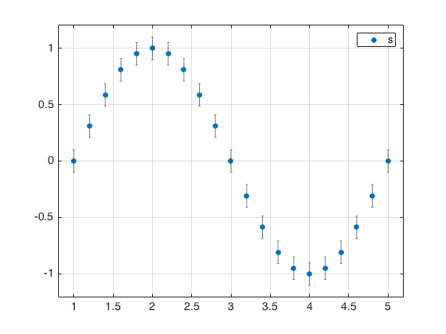
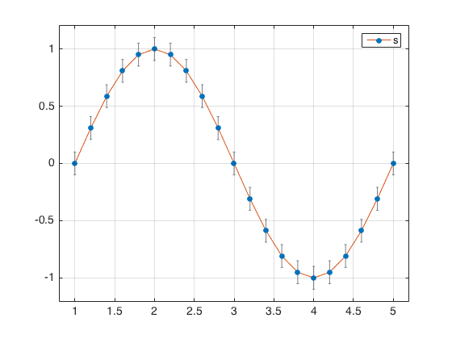
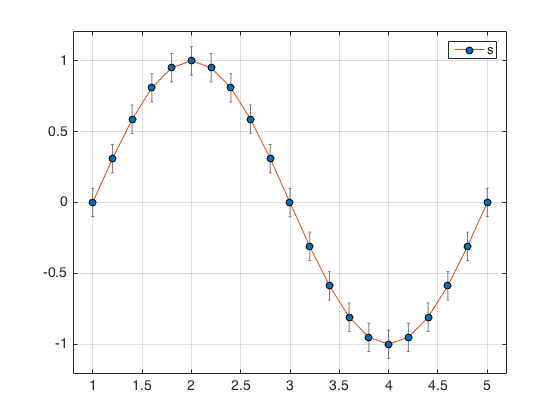
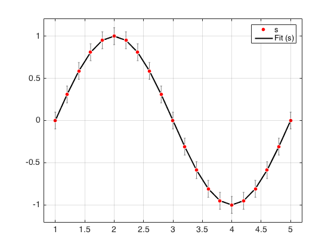
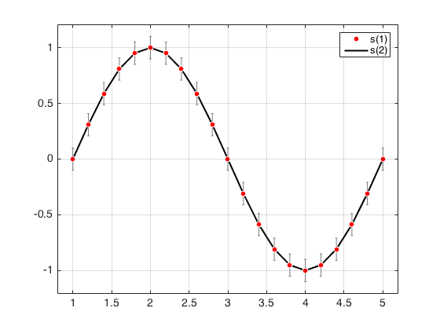
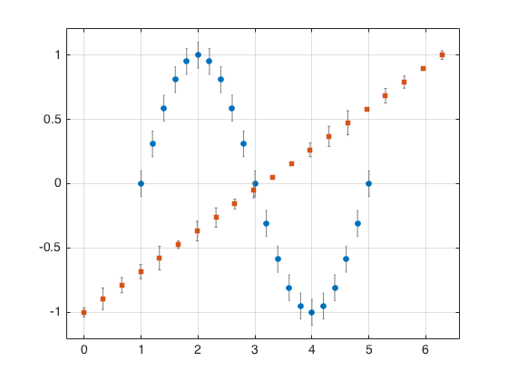
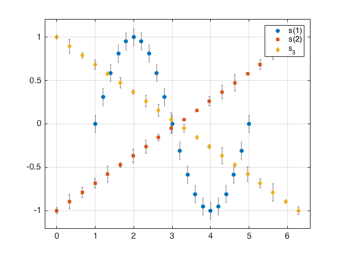

@spec1d/plot
This is the reference documentation for the function @spec1d/plot
This function creates a plot of a given spectra or vecor of spec1d objects.
Contents
Syntax
varagout = plot(s,varargin)
Inputs
- s - Single or vector of spec1d objects
Optional Inputs
There are a few built in common options. Which can be used by passing parameter/value pairs. These are:
The option semilogy
- 0: The y-axis is not in log scale. (Default)
- 1: The y-axis is not in log scale.
The option semilogx
- 0: The x-axis is not in log scale. (Default)
- 1: The x-axis is not in log scale.
The option loglog
- 0: The x-axis and y-axis is not in log scale. (Default)
- 1: The x-axis and y-axis is not in log scale.
The option tLength sets the length of the error bar tees
- NaN: tee length is calculated as 0.075 * the minimum distance between points.
- x>0: tee length is calculated as x * the minimum distance between points.
- x<0: tee length is supplied by the value x.
Optional Outputs
- h_plot - Single or vector array of handles corresponding to plot points.
- h_ebar - Single or vector array of handles corresponding to error bars.
- h_fits - Single or vector array of handles corresponding to fit line.
Examples
These are examples using @spec1d/plot
Example 1
s = spec1d(1:0.2:5,sin(linspace(0,2*pi,21)),0.1);
figure
plot(s)
legend('s')
 Example 2
Get and use handles
figure h = plot(s); legend(h,'s') set(h,'LineStyle','-')
Example 3
Overload the function and use handles
figure h = plot(s,'LineStyle','-'); legend(h,'s') set(h,'MarkerEdgeColor','k')
Example 4
Spec1d object with a fit and use the handles
s_1 = set(s,'yfit',get(s,'y')); figure [h,~,f] = plot(s_1,'MarkerEdgeColor','w'); legend([h f],{'s', 'Fit (s)'}) set(h,'MarkerFaceColor','r') set(f,'Color','k')
Example 4
Multiple spec1d objects
s(2) = spec1d(linspace(0,2*pi,20),linspace(-1,1,20),0.1*rand(20,1));
figure
plot(s)
legend([h f],{'s(1)', 's(2)'})
s_3 = spec1d(linspace(0,2*pi,20),linspace(1,-1,20),0.1*rand(20,1));
figure
h = plot(s,s_3);
legend(h,{'s(1)', 's(2)', 's_3'})
  